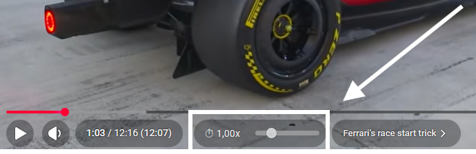
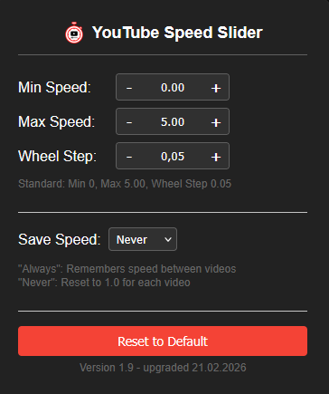

Add playback speed slider and controls to the YouTube video player
A smooth, draggable slider integrated directly into YouTube's player controls. Adjust playback speed from 0x to 5x with precision.
See the current playback speed at a glance with a clean display next to a clock icon in the YouTube player's bottom controls.
Hover over the speed control and scroll to increase or decrease speed. Configurable step size via settings.
Quickly reset playback speed to 1.0x by clicking the speed display. No need to drag the slider back.
Your preferred speed is remembered across videos. Enable or disable persistence in the settings popup.
Customize min/max speed range, wheel step increment, and save behavior via the extension popup. Changes apply instantly.
Toggleable preset buttons (0.25x to 2.00x) for quick switching between common speeds. Enable them in the settings.
Works with YouTube Shorts too. The speed control adapts to the Shorts player layout automatically.
All settings stored locally. No tracking, no analytics, no data sent to external servers.


Download the latest build from GitHub Releases:
📦 Download Latestgit clone https://github.com/sioXD/YouTube-Speed-Slider.git
about:debugging#/runtime/this-firefoxmanifest.json from the cloned repositoryYouTube Speed Slider is open source under the GPL-3.0 License. Based on the original youtube-speed-controls by Jan Klass. Contributions are welcome!